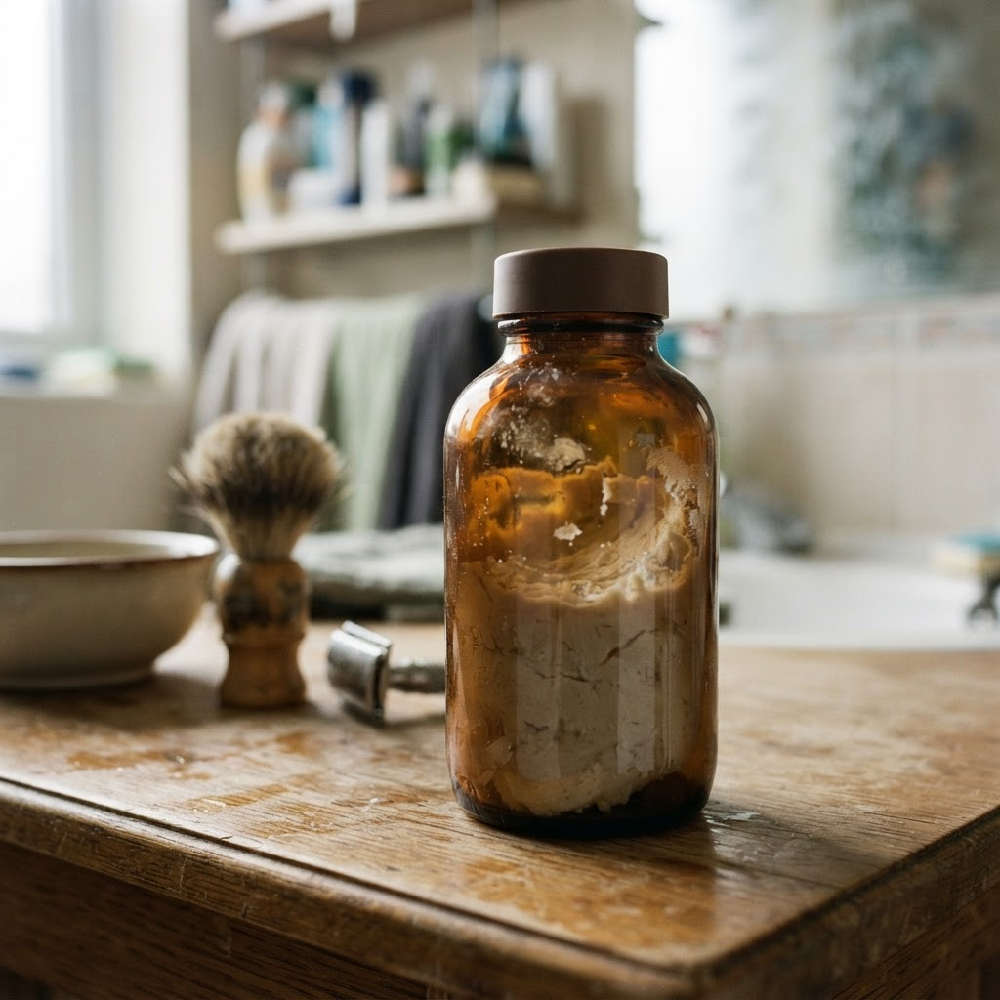

Сколько стоит где купить barrister blue gin в Невском районе

Невский район — динамичная часть мегаполиса, где ритм жизни не утихает даже после полуночи. В таких условиях возможность оперативного получения качественного алкоголя становится необходимостью, а профессиональная ночная доставка за час решает проблему доступности любимых напитков в любой локации.
Сколько стоит где купить barrister blue gin в Невском районе
Часто в редакцию поступают сообщения: где быстро найти качественный джин в ночное время? Мы разобрали типичный запрос клиента, который столкнулся с поиском Barrister Blue Gin. Процесс работы выстроен максимально просто и прозрачно. Сначала клиент оформляет заявку на сайте или через мессенджер, указывая точный адрес. Диспетчер мгновенно передает заказ курьеру, который уже находится на линии. Важно понимать, что в Невском районе логистика отлажена: курьер знает специфику дворов и переулков, что позволяет соблюдать заявленный интервал в шестьдесят минут. Мы не заставляем ждать: как только заказ подтвержден, товар изымается из специализированного хранилища с соблюдением всех температурных норм и правил транспортировки. Стоимость услуги фиксирована и не меняется от времени суток. Этот алгоритм позволяет нам гарантировать, что каждый покупатель получит напиток в идеальном состоянии для своего вечера. Мы убрали лишние звенья из цепочки, оставив только прямой контакт между складом и заказчиком. Если в каталоге указано наличие, значит, товар физически готов к отправке.
Преимущества доставки Barrister Blue Gin ночью
Клиентский опыт показывает, что основной критерий выбора — скорость и предсказуемость. При заказе джина Barrister Blue Gin через наш сервис, вы получаете не только продукт, но и сервис полного цикла. Мы исключаем посредников, поэтому цена остается честной, а время ожидания не превышает часа. Курьерская служба работает автономно: транспорт укомплектован навигационными системами, которые оптимизируют маршрут по Невскому району в реальном времени. При получении вы проверяете целостность упаковки и акцизную марку. Мы не работаем по предзаказу «на завтра» — мы специализируемся на моментальных поставках здесь и сейчас. Это профессиональный подход к организации ночного сервиса: четкий регламент, проверенные сотрудники и отлаженная система логистики. Любой технический сбой исключен автоматизированной системой обработки данных. Такой подход позволяет нам удерживать лидерские позиции в секторе доставки качественного алкоголя.
Что делать, если заказ опаздывает более чем на час?
Мы строго следим за временными интервалами, но в случае непредвиденных дорожных заторов курьер заранее предупредит вас о сдвиге графика. Если время ожидания превысит допустимые нормы, менеджер предложит персональный бонус в качестве компенсации. Ваше доверие — приоритет нашей работы. Вывод: Качественный сервис — это сочетание скорости и прозрачности, доступное круглосуточно.
Итог
Итог всегда один: назвать следующий шаг покупателю — оформить заказ и получить его в течение часа в своём районе.
Заказать доставку
Оформите заказ сейчас: привезём за 40-60 минут в любой район Петербурга, круглосуточно.
Призыв
Сколько стоит barrister and mann купить в Невском районеНевский район — динамичная локация, где темп жизни не затихает с заходом солнца. Для тех, кто ценит комфорт, ночная доставка напитков за один час становится … Сколько стоит barrister and mann мыло для бритья купить в Невском районеНевский район славится ритмом, который не затихает даже глубокой ночью. Если ваш вечер превратился в экстренный поиск качественных напитков, курьеры доставят…
Сколько стоит barrister and mann мыло для бритья купить в Невском районеНевский район славится ритмом, который не затихает даже глубокой ночью. Если ваш вечер превратился в экстренный поиск качественных напитков, курьеры доставят…